前言
拿到题目挺兴奋的，因为有一点小经验，所以分析起来不算费力，有一些答案很快就找到了。这次对杂项的分析比较快速，毕竟见过类似的，取证的大家收放的速度也是可以的。
题目
-
- 计算机曾经时间是错误的，后经过自动同步调整为了正确的时间。请问该同步的时间为（）（北京时间，格式为yyyyMMddhhmm例如202004250800）
-
- 计算机系统安装时间为（）（北京时间，格式为yyyyMMddhhmm例如202004250800）
-
- 用户xiaohu的开机密码为（）
-
- 计算机从曾连接过多个优盘，最早连接的优盘序列号为 （）
-
- 请在优盘镜像中找出用户xiaohu壁纸图片（不考虑分辨率是否一致），该图片在优盘中的起始地址为（）（字节）
-
- 优盘中有个文件拷贝自计算机，拷贝该文件的用户的用户名为（）（字母全部小写）
-
- 略
-
- 现场取证人员已对一台正处于开机运行状态的Windows系统进行物理内存转储（镜像）并将其压缩为WinMemory.zip，请先解压后再进行分析。该系统可能被勒索病毒感染，通过KDBG扫描检测该系统的Build版本号，版本号为（）(如17763），并使用Volatility Framework 2.6.1版本对疑似进程remsh.exe(PID:9932)进行程序代码转储，导出该程序代码dmp文件，计算其MD5哈希值（字母全部大写）（）
~注意：两个答案中间用_区分开；
- 现场取证人员已对一台正处于开机运行状态的Windows系统进行物理内存转储（镜像）并将其压缩为WinMemory.zip，请先解压后再进行分析。该系统可能被勒索病毒感染，通过KDBG扫描检测该系统的Build版本号，版本号为（）(如17763），并使用Volatility Framework 2.6.1版本对疑似进程remsh.exe(PID:9932)进行程序代码转储，导出该程序代码dmp文件，计算其MD5哈希值（字母全部大写）（）
-
- usb数据包分析，根据附件提示解出flag，请提交flag{}内的内容；
-
- 内存取证，根据附件提示解出flag，请提交flag{}内的内容；
-
- 日志分析，根据附件提示解出flag，请提交flag{}内的内容；
-
- 数据包分析，根据附件提示解出flag，请提交flag{}内的内容；
-
- 数据恢复，根据附件提示解出flag，请提交flag{}内的内容；
取证1
查看系统日志，找到时间临界处。比如下方的记录编号205。
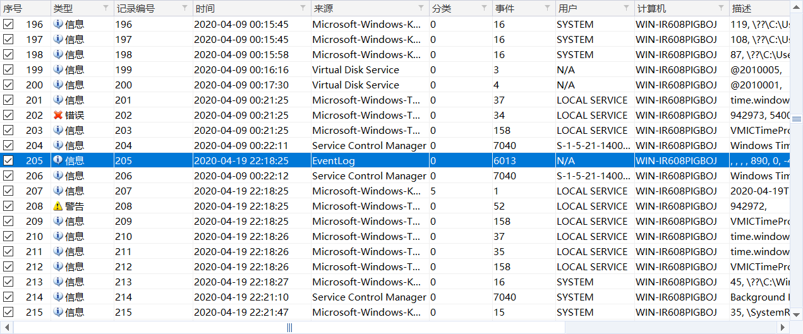
找到它的准确时间。202004192218
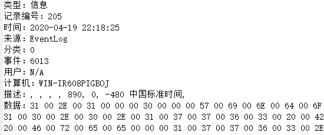
即在202004192218使用Windows Time服务同步时间
取证2
由取证一计算系统时间同步后和同步前的差值，查看系统安装时间，系统安装时间+同步前后的差值即实际系统安装时间。
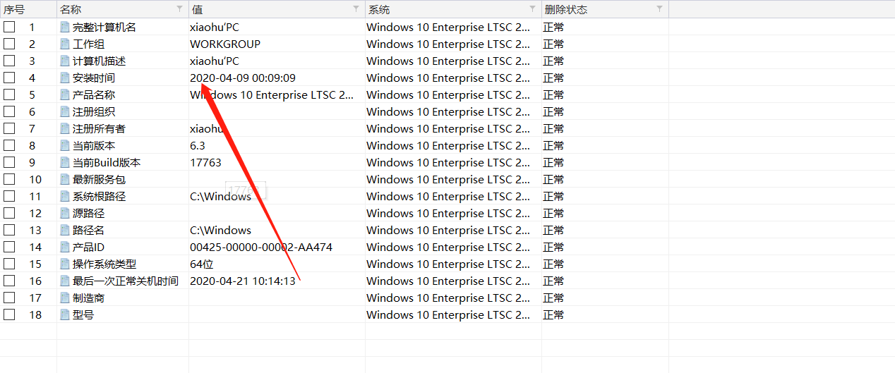
取证3
没找到，求指教。
取证4
查看USB设备使用痕迹，如下：
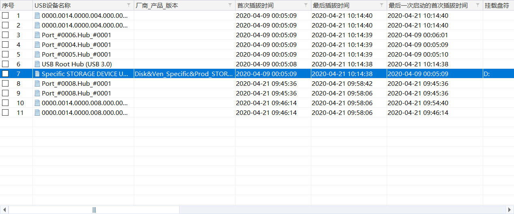
其中USB设备名称：Specific STORAGE DEVICE USB Device为U盘，查看此设备ID如下
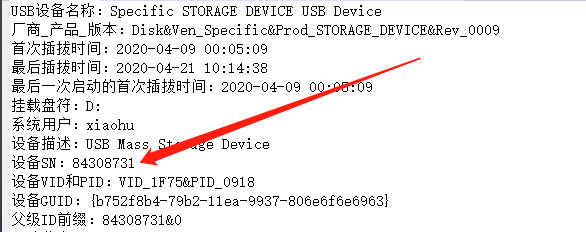
取证6
文件拷贝到U盘的时间是2020-04-21 10:20
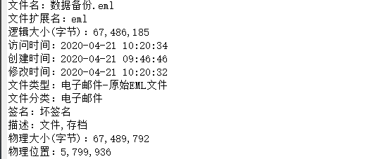
通过查看系统日志，在此期间用户liu登录系统并使用资源管理器（估计不是liu就是xiaohu）
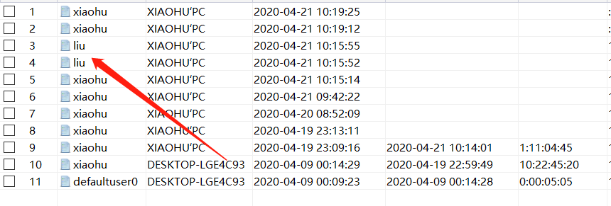
提交liu的时候正确了，那么就是liu了。
取证7
略。
取证8
硬盘空间不够了，先放弃。
取证9
金刚包，求指教。
取证10
不知道为什么，一眼看过去直觉告诉我需要volatility，所以没有过多的尝试。
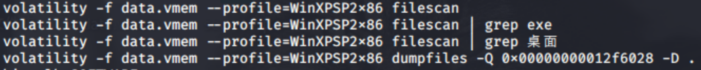
疑点在桌面一个叫disk.zip的压缩包（禁止套娃），因为是中文系统，逼着我去装了中文适配。
把disk.zip下载下来后打开，disk.img放去还原，得到usb.pcapng，这是一个usb信号记录包，一般键盘信号常驻于第三个字节。
tshark -r usb.pcapng -T fields -e usb.capdata > usbdata.txt
使用tshark将数据转文本。借鉴了大佬的脚本。
1 | normalKeys = {"04":"a", "05":"b", "06":"c", "07":"d", "08":"e", "09":"f", "0a":"g", "0b":"h", "0c":"i", "0d":"j", "0e":"k", "0f":"l", "10":"m", "11":"n", "12":"o", "13":"p", "14":"q", "15":"r", "16":"s", "17":"t", "18":"u", "19":"v", "1a":"w", "1b":"x", "1c":"y", "1d":"z","1e":"1", "1f":"2", "20":"3", "21":"4", "22":"5", "23":"6","24":"7","25":"8","26":"9","27":"0","28":"<RET>","29":"<ESC>","2a":"<DEL>", "2b":"\t","2c":"<SPACE>","2d":"-","2e":"=","2f":"[","30":"]","31":"\\","32":"<NON>","33":";","34":"'","35":"<GA>","36":",","37":".","38":"/","39":"<CAP>","3a":"<F1>","3b":"<F2>", "3c":"<F3>","3d":"<F4>","3e":"<F5>","3f":"<F6>","40":"<F7>","41":"<F8>","42":"<F9>","43":"<F10>","44":"<F11>","45":"<F12>"} |
获得键盘记录
1 | 'uutdobzipsrn'.hill_decode()aabaaaaabbaabbabcbabbbcccbbbcdcccceccccecccedccdcdcccddcdeddccfcdcdfcdcdccecdcccdcccbcbdbbbbbcbbbbacbaababaaaaabaabaaaaaaaaaaaaaaaaaaaaa |
希尔解密
ejcixhwdnegm
flag应该就是flag{ejcixhwdnegm}
取证11
access.log拿到后unquote一下获得对人友好的日志。导出
1 | cat access.log | egrep '!=|<=|>=' > a.txt |
正则匹配ascii转换一下字符
1 | import re |
flag应该是flag{w3bvu1lisDanger}
取证12
下载附件，是一个数据包，用wireshark打开一下，过滤下http
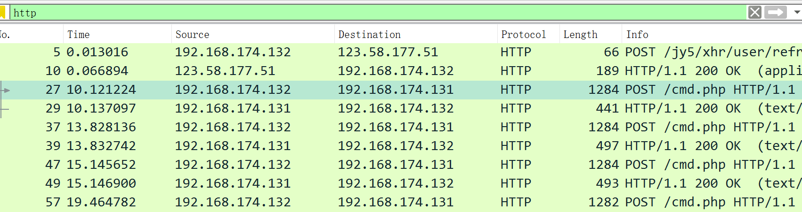
POST /cmd.php 看起来非常可疑，一个一个分析太累，导出再看。导出所有html对象，逐个分析，但是看完所有文件的时候，有个可疑的字符串出来了。
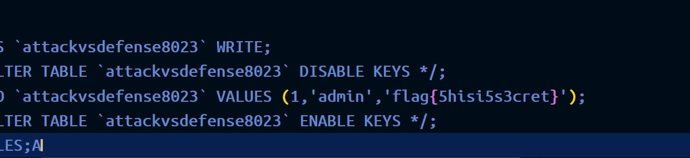
取证13
看见disk0毫不犹豫就拿去还原了。
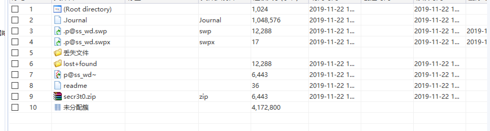
跟进”丢失文件”文件夹，发现这文件
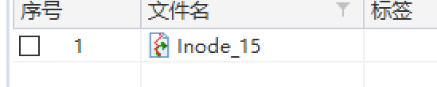
里面的内容：
打开了p@ss_wd~ 文件
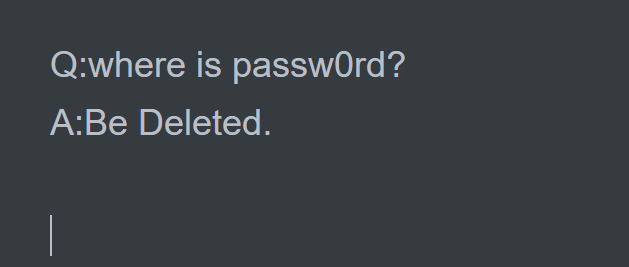
根据提示，刚刚拿到的应该是密码。
解压里面的压缩包，获得文件flag.png
hex修改一下图高
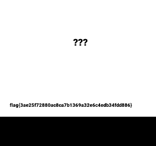
Web1
先用御剑扫出后台，然后进入phpadmin数据库后台，比赛中已经提示了数据库密码是roothashnopasswd，试出帐号为root，登录进去以后在里面翻一番，找到flag
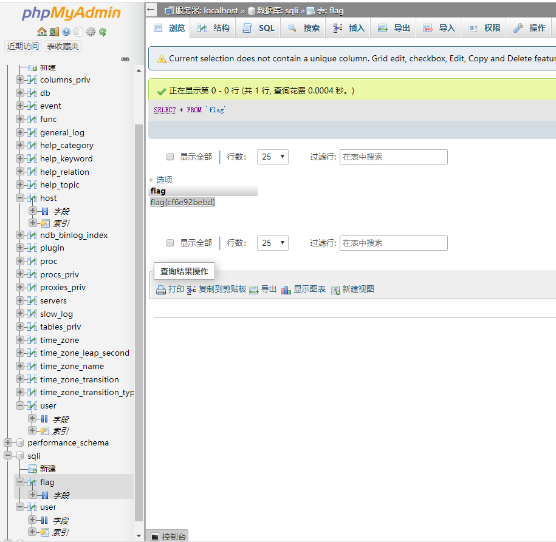
总结
有些东西该记住的还是要记住的，不然忘得很快，这次和叶师傅、付师傅配合得很好，不愧是他们两个，躺着得我非常幸福。还有就是不能过于纠结一些题目，他们往往容易成为时间刺客。
2020年4月27日